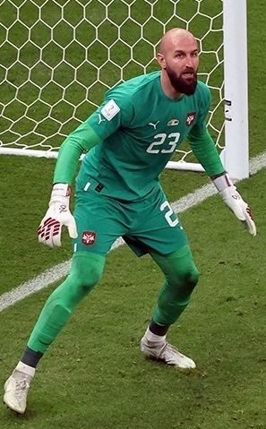

Ezzcoins › Player pages › Vanja Milinković-Savić
80
GK

Milinković-Savić
DIV79
HAN80
KIC80
REF80
SPD79
POS81
Photo (cropped): Hossein Zohrevand · CC BY-SA 4.0 · Wikimedia Commons
Photo source
https://commons.wikimedia.org/wiki/File:Vanja_Milinkovic_Savic_WC2022.jpg
Licence: https://creativecommons.org/licenses/by-sa/4.0
Vanja Milinković-Savić
80 GK · SSC Napoli · Serie A Enilive ·  Serbia
Serbia
No console price yet. Add this player to your watchlist on Ezzcoins: the most-watched players get a price every hour.
80Meta rating · GK same as overall
DIV79
HAN80
KIC80
REF80
SPD79
POS81
- Position
- GK
- Club
- SSC Napoli
- League
- Serie A Enilive
- Nation
- Serbia
- Skill moves
- 1★
- Weak foot
- 3★
- Preferred foot
- Right
Meta rating: Ezzcoins' own estimate of how well this card plays in game, worked out from its stats for each position it can play, its skill moves, weak foot and PlayStyle+. An average card scores about its overall rating; higher means it plays above its rating.
Watch on EzzcoinsMore from SSC Napoli
- 86
 Scott McTominayCM
Scott McTominayCM - 85
 Kevin De BruyneCAM
Kevin De BruyneCAM - 83
 Amir RrahmaniCB
Amir RrahmaniCB - 83
 Stanislav LobotkaCM
Stanislav LobotkaCM - 82
 André-Franck Zambo AnguissaCM
André-Franck Zambo AnguissaCM - 82
 Giovanni Di LorenzoRB
Giovanni Di LorenzoRB - 81Alessandro BuongiornoCB
- 81Alex MeretGK